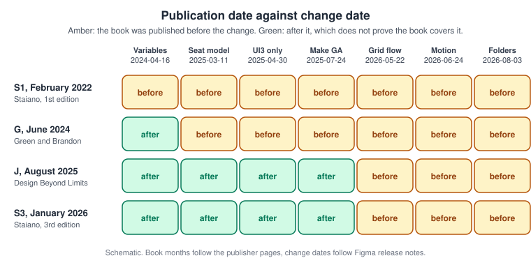
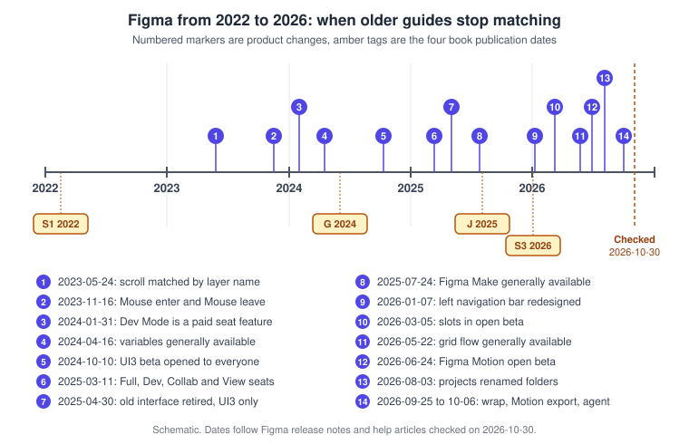
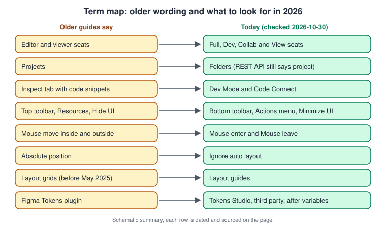
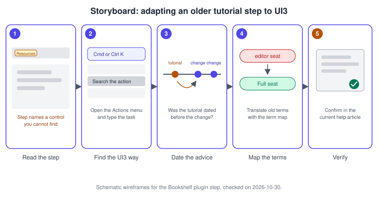
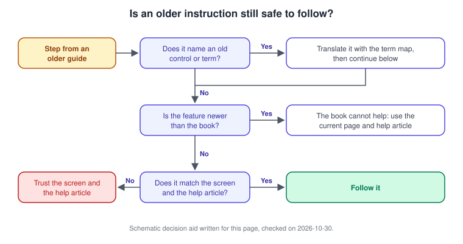

What Changed Since Older Guides
|
This content was generated with the assistance of AI and should be verified against the official documentation before being relied on in production. |
This page was written on 2026-10-30 and collects, in one place, every correction that the other pages of this sub-section make to older Figma books and tutorials. It describes UI3, the only interface since 2025-04-30. It documents no feature of its own, so it needs no particular plan or seat and has no beta status; the features it points to have their own plan, seat and beta or general availability statements on their own pages. Tier names used below are Starter, Professional, Organization and Enterprise for plans, and Full, Dev, Collab and View for seats. Prices are deliberately not given.
Figma is a continuously deployed product without version numbers, so the only reliable way to date an instruction is a calendar date. The dates below come from Figma release notes and help articles; the release notes page lists only recent entries, so for older dates this page follows the release history gathered while writing the sub-section. Treat a date as a pointer to the official source and recheck it there, because the product changes weekly.
The four books and their dates
The sub-section was written with four books as concept references, never as a source for procedures and never copied. In this page they are abbreviated as follows. Their publisher pages are in the References.
-
S1: Fabio Staiano, Designing and Prototyping Interfaces with Figma, 1st edition, Packt, 2022.
-
G: Tom Green and Kevin Brandon, UX Design with Figma, Apress, 2024.
-
J: Šimon Jůn, Design Beyond Limits with Figma, Packt, 2025.
-
S3: Fabio Staiano, Designing and Prototyping Interfaces with Figma, 3rd edition, Packt, 2026. The corrections attributed to it rely on the publisher’s table of contents and description, because the chapters could not be read in full.
Newer does not mean current. A book published in 2026 was written months earlier against a product that kept moving, and a book published after a change does not necessarily describe it. Read the figure below with that in mind.

Source: Figma release notes
Figma from 2022 to 2026
Between the first and the latest of these books, Figma changed in four directions. The interface was rebuilt twice: UI3 was announced on 2024-06-26, opened as a beta to everyone on 2024-10-10, and became the only interface on 2025-04-30, then its left navigation bar was redesigned on 2026-01-07 (see Interface Tour). The commercial model was rewritten: Dev Mode became a paid seat feature on 2024-01-31 and the Full, Dev, Collab and View seats arrived on 2025-03-11 (see Plans, Seats and AI Credits). The design model deepened: variables became generally available on 2024-04-16, and auto layout gained grid flow, wrap and a CSS-like layout version in 2026. And the product family grew from a design editor and FigJam to Slides, Make, Sites, Buzz, Draw, Motion, Specs, Weave, code layers, the Figma agent and the Figma MCP server (see Introduction and Product Family).

Source: Figma release notes
Some of these changes are still in beta or recent, namely slots (open beta since 2026-03-05, re-check general availability), Figma Motion (open beta since 2026-06-24) and Sites, Buzz and Specs. Do not read the table below as a statement that those features are finished.
The consolidated table
Each row paraphrases a kind of statement found in older books; none of the book text is reproduced. The chapter column gives the chapter only where it is known from the concept mapping; "throughout" means the topic recurs across the book.
Interface and navigation
| Book | Chapter | What older guides say | What is current | Date of change | Where |
|---|---|---|---|---|---|
S1, G |
Throughout |
Describe the previous interface (UI2): a top toolbar, a Resources button, an Assets panel opened from a Library button, an older properties panel, quick actions and a Hide UI command. |
UI3 is the only interface. Tools are in the bottom toolbar, the Actions menu opens with Cmd K on macOS or Ctrl K on Windows, and Minimize UI replaces Hide UI. The left navigation bar was redesigned again. |
2025-04-30, then 2026-01-07 |
|
S1 |
ch1 |
Says Figma does not run on tablets and treats the desktop app mostly as a way to get local fonts. |
A mobile app exists, an iPad app edits FigJam boards, and the desktop app has tab groups, pinned tabs and split view. |
Ongoing, see the page |
|
S1, G |
Presenting and testing |
Show the mobile app Mirror flow for previewing a prototype on a phone. |
The flow changed with the current mobile app; follow the current official article. |
Not dated by Figma, re-check |
Presenting and Testing Prototypes, Usability Testing and Iteration |
Older guides |
Layout guides |
Call layout guides "layout grids". |
The feature is called layout guides. |
2025-05 (month only) |
|
Older guides |
Prototype scrolling |
Use a Preserve scroll position toggle. |
It was replaced by matching on layer names. |
2023-05-24 |
Seats, plans and files
| Book | Chapter | What older guides say | What is current | Date of change | Where |
|---|---|---|---|---|---|
S1, G, J |
Throughout |
Talk about editor and viewer seats, a "Paid Team plan" (G), "paid seats" and "viewer seats" (J), and tie branching or Code Connect to a plan in ways that no longer hold. Some material also refers to a "Content seat" that no current official page lists. |
The model is Full, Dev, Collab and View seats on the Starter, Professional, Organization and Enterprise plans, plus Education and Government. Editor and viewer wording was used until 2024-01-08, then per-product seats. Check the plan pages for what each plan allows. |
2024-01-08, then 2025-03-11 |
|
S1 |
ch1 |
Describes free-plan limits and says FigJam is priced separately. |
FigJam is available on any team or plan, with seats as above. Per-plan limits change, so read the current plan comparison. |
2025-03-11 for the seat model |
|
S1, G, J |
ch1, ch10 |
Call the top-level groupings of files "projects" and describe a separate personal Drafts area. |
Projects are folders, which can be nested and have Inherited and Limited permission states. Drafts moved into teams in 2024, and the temporary "Drafts to move" space is gone. The REST API and the project webhook context still use the word project. |
2024-10-15 (drafts), 2025-10-09, 2026-08-03 (folders) |
|
S1, G, J |
Throughout |
Show Share menus and link permissions in terms of the old roles. |
Sharing uses access levels and seats; password protection and guest access are described on the files page. |
2025-03-11 |
Design fundamentals, layout and components
| Book | Chapter | What older guides say | What is current | Date of change | Where |
|---|---|---|---|---|---|
S1, G, J, S3 |
Auto layout chapters |
Describe horizontal and vertical flows only, with no wrap or horizontal wrap only, so card grids are built by nesting rows or duplicating frames. |
Grid flow is generally available, vertical wrap exists, and the CSS-like layout version is the default for new frames. Legacy frames can switch until January 2027, according to the release notes. |
2026-05-22 (grid), 2026-09-25 (vertical wrap), July 2026 (layout version) |
|
Older guides |
Auto layout |
Call the option that removes a child from the flow "absolute position". |
It is called Ignore auto layout. |
Not dated by Figma |
|
S1 |
ch8 |
Teach breakpoints by manually duplicating frames and relying on constraints alone. |
Wrap, min and max sizes and grid flow make constraint-only workflows a fallback. |
2026 |
|
S1, G, J, S3 |
Component chapters |
Teach placeholder components, instance swap or variants for flexible regions, and do not mention animated components or Check designs. |
Slots exist (open beta since 2026-03-05, settings from 2026-06-01), as do animated components and Check designs. Simplified instances are being deprecated, according to the component properties article. |
2026-03-05, 2026-03-23 |
Slots, Components and Instances, Variants and Component Properties, Design Systems |
S1 |
ch5 |
Uses styles for everything, including colour and spacing. |
Variables carry colour, spacing and theming. Styles remain for text, effects and layout guides, and styles can contain variables but not the reverse. |
2024-04-16 |
Styles, Variables, Collections and Modes, Color, Fills and Images |
G, J |
Variable chapters |
Cover variables with the previous interface and have no extended collections. |
Extended collections exist for Enterprise. |
2025-11-20 |
|
S1, G, J |
Effects chapters |
Know only shadows and blurs. |
Effects also include noise, texture, progressive blur and glass. |
Before 2026, see the page |
|
Older guides |
Vector chapters |
Offset paths with strokes, masks or plugins. |
The shape builder, offset and simplify commands exist. |
Not dated by Figma |
|
Older guides |
Illustration |
Treat Pencil and Brush as the only freehand tools. |
Draw mode adds brushes, variable width strokes and more. |
2025-05-07 |
Prototyping and animation
| Book | Chapter | What older guides say | What is current | Date of change | Where |
|---|---|---|---|---|---|
S1, G, S3 |
ch9 |
Use the trigger names "Mouse move inside" and "Mouse move outside". |
The triggers are Mouse enter and Mouse leave, and video triggers exist. The old labels cannot be created. |
2023-11-16 |
Prototyping Basics, Transitions, Easing and Springs, Smart Animate |
S1 |
ch9 |
Presents interactive components as the newest feature. |
They are established, alongside conditionals, expressions and variables. |
Variables GA 2024-04-16 |
Interactive Components and Microinteractions, Advanced Prototyping with Variables |
Pre-2024 guides |
Prototype logic |
Build counters and carts by duplicating and linking frames. |
Prototypes can store values with variables and use conditions and expressions. |
2024-04-16 |
|
S1, G, J, S3 |
Animation chapters |
Say Figma has no timeline, and take Lottie from third-party plugins such as LottieFiles or Aninix. |
Figma Motion has a keyframe timeline (open beta) and exports Lottie, dotLottie, MP4, WebM and GIF natively. |
2026-06-24 (beta), 2026-09-30 (export) |
Handoff, tokens and developer tools
| Book | Chapter | What older guides say | What is current | Date of change | Where |
|---|---|---|---|---|---|
S1 |
ch3, ch11 |
Show the Inspect tab with CSS, iOS and Android snippets. |
Dev Mode replaced it. It is a paid Dev or Full seat feature, with statuses, focus view, compare changes, annotations and codegen plugins. |
2024-01-31 |
|
G |
Dev Mode chapter |
Describes Dev Mode as newly released. |
Add Code Connect, Figma for VS Code and the Figma MCP server, which G does not cover. J predates the MCP server. |
2024-01-31 onwards |
|
S1 |
ch12 |
Names a plugin called Figma Tokens. |
The plugin is now the third-party Tokens Studio, an ecosystem tool to present after native variables. |
After 2024-04-16 |
|
J |
Token chapters |
Writes "Token Studio". |
The product name is Tokens Studio. |
Not dated by Figma |
|
All four |
Plugin chapters |
Name third-party plugins such as Stark, Adee, Cards for Humanity, Wireframer, Humaaans, To Path, Aninix, data.to.design, Batch Styler, Content Reel, Variables to CSS or JSON, Builder.io and Figma to Webflow or Framer. |
Check each one on its Community page for recent maintenance and treat it as ecosystem, not as a Figma feature. Generative plugins, shaders and building plugins with the agent post-date every book. |
Check per plugin |
Using Plugins and Widgets, Building Plugins, Building Widgets |
AI, collaboration and new products
| Book | Chapter | What older guides say | What is current | Date of change | Where |
|---|---|---|---|---|---|
G |
AI sections |
Calls FigJam AI a beta feature. |
The current help pages consulted on 2026-10-30 describe FigJam AI as available on paid plans and do not mark it as beta. Check the article for any status label. |
Not dated by Figma |
|
J |
Make chapter |
Calls Figma Make a beta feature. |
Make has been generally available since 2025-07-24, though parts of it carry their own status. |
2025-07-24 |
|
G, J, S3 |
AI sections |
Mention AI text suggestions, and do not cover AI credits, the agent, generative plugins or custom skills. |
AI text suggestions are retired. Credits are metered per seat and plan, and the agent and Weave tools moved to general availability on 2026-10-06, according to the help centre. |
2026-06-03 (pay as you go on Professional), 2026-10-06 |
The Figma Agent and Skills, Figma AI Tools, Plans, Seats and AI Credits |
S1, G |
Process chapters |
Treat FigJam as just launched and Figma as a design editor plus FigJam. |
Slides, Make, Sites, Buzz, Weave, Specs and code layers exist. |
See the timeline |
Figma Slides, Figma Sites, Figma Buzz and Weave, Figma Specs, Code Layers |
S1, S3 |
Migration |
Discuss Adobe XD as a migration source. |
Adobe XD is in maintenance mode and Figma has no official importer for it. |
Not dated by Figma |
The methods in the books, such as interviews, personas, journey maps, user flows and usability testing, do not depend on a product version, and the concept chapters on shapes, bezier handles, column grids and typography still hold. Take the method from the book and the click paths from the current help article. The same applies to accessibility ideas, whose Figma tooling is on Accessible and Inclusive Design, and to research methods on Research, Personas and Journey Maps.
Term map
Most of the friction when following an older guide is vocabulary. The figure maps the wording that recurs in the table to what to look for today.

Source: Figma Learn: Compare seats
Procedure: adapt an older Bookshelf tutorial to UI3
The scenario is a tutorial, written before 2025, that builds the Bookshelf "Add to shelf" button and tells the reader to open a plugin from a Resources button. The numbers match the storyboard.

-
Read the step and underline every control or term it names, for example the Resources button (panel 1).
-
Open the Actions menu with Cmd K on macOS or Ctrl K on Windows, and type the task instead of looking for the old button. In UI3 the bottom toolbar and the left navigation bar hold what the old top toolbar held (panel 2).
-
Find the tutorial’s publication date and compare it with the timeline above. Anything newer than the tutorial, such as grid flow or slots, will not be in it (panel 3).
-
Replace old terms with the term map: "editor" with a Full seat, "project" with a folder, "Inspect" with Dev Mode (panel 4).
-
Confirm the final step against the current help article and the screen. When they disagree with the tutorial, trust them (panel 5).
Procedure: decide whether an older instruction is still safe
The scenario is a chapter on the Bookshelf cart that duplicates frames to count books. The flow below turns the judgement into three questions.

-
Ask whether the step names a control or a word from the term map. If yes, translate it first.
-
Ask whether the feature is newer than the book. Duplicated-frame counters are, because variables arrived on 2024-04-16. Use Advanced Prototyping with Variables instead of the book.
-
If the feature is not newer, compare the step with the screen and the current help article. When they match, follow the step. When they do not, trust the screen and the article.
-
Write the date and the article address next to the step in your own notes so the next reader does not repeat the check.
Source: Figma release notes
Procedure: re-check a third-party plugin named in a book
The scenario is a book that recommends a contrast plugin for Bookshelf. Whether the plugin still works is a property of its page, not of Figma.
-
Search for the plugin by name in Plugins in the Actions menu, or in the Community.
-
Open its Community page and read the description, the last update date and the reviews. Treat an unmaintained plugin as a risk.
-
Compare what it does with the native feature. For tokens, native variables come first (see Variables, Collections and Modes); for Lottie, Figma Motion exports it natively.
-
If you keep the plugin, run it on a copy of the file first, as described on Using Plugins and Widgets.
Pitfalls
-
Trusting a date on a page as if it were a version number. Figma has none; always read the date together with the official source.
-
Treating a beta feature as finished because a recent book mentions it. Check the status on the feature’s own page.
-
Assuming a book published after a change covers it.
-
Updating a legacy layout or component setting in a shared library without reading the notes on Auto Layout first.
-
Reproducing book text when you write your own notes: paraphrase and cite the official page.